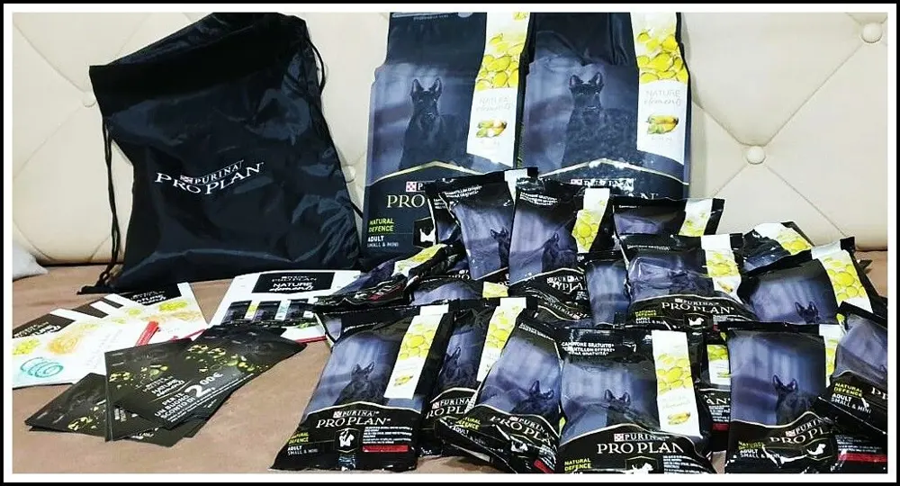
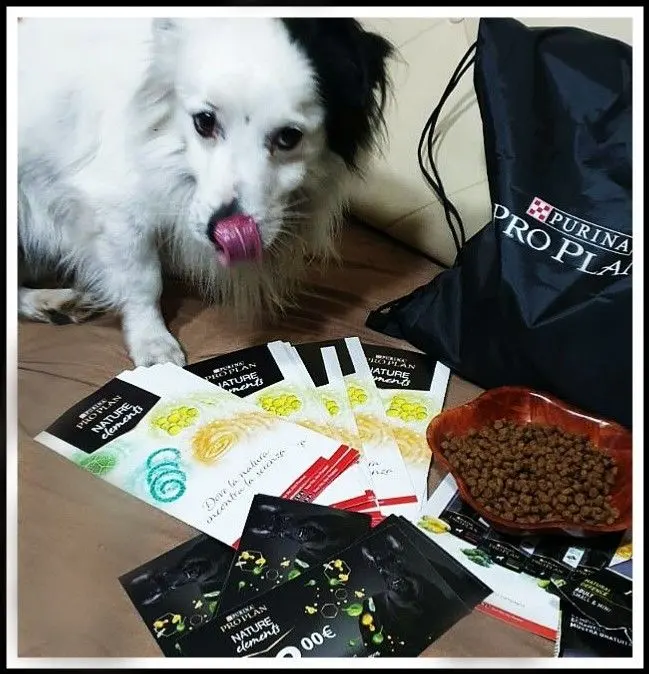
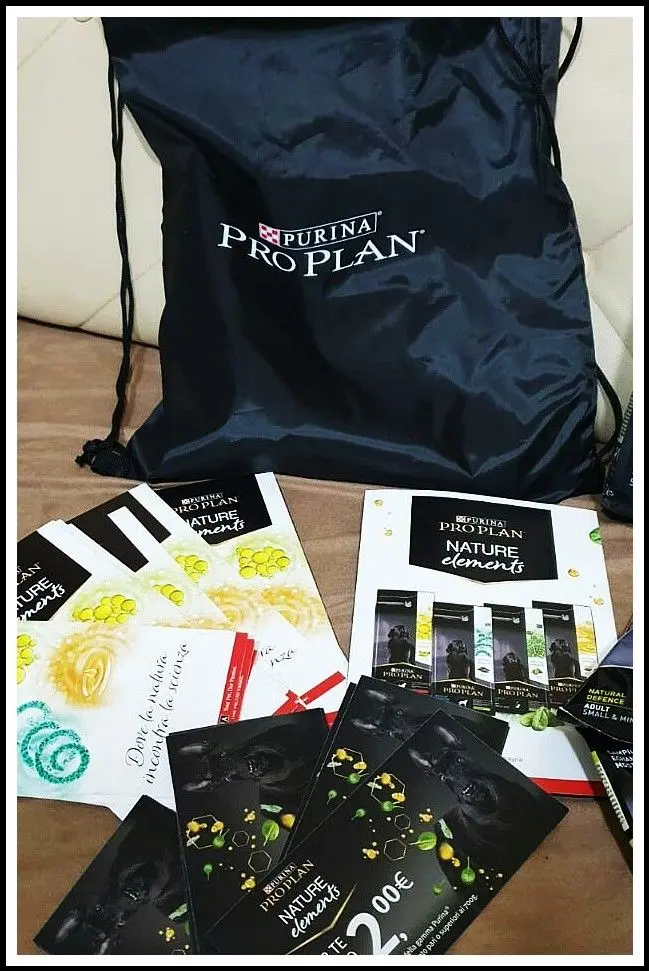
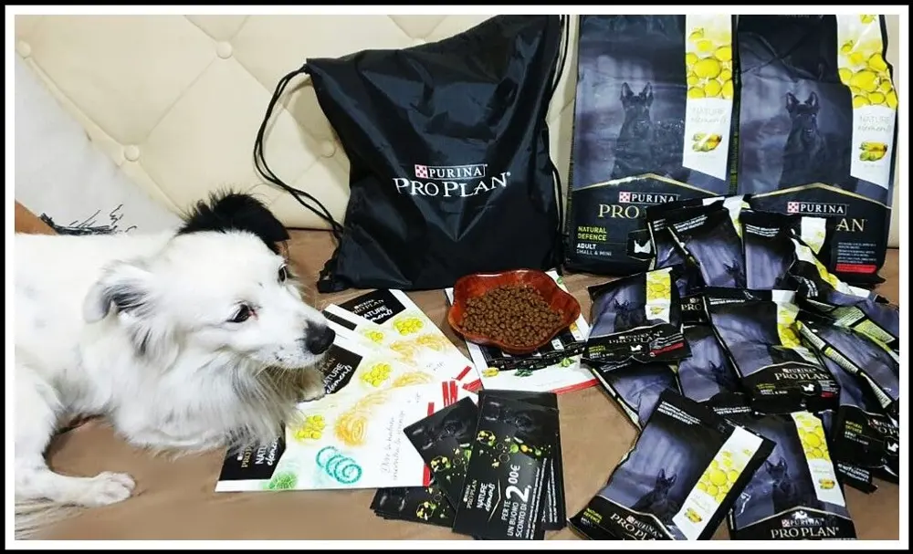
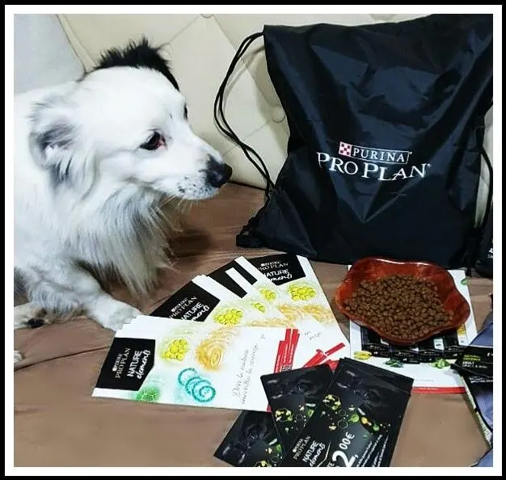
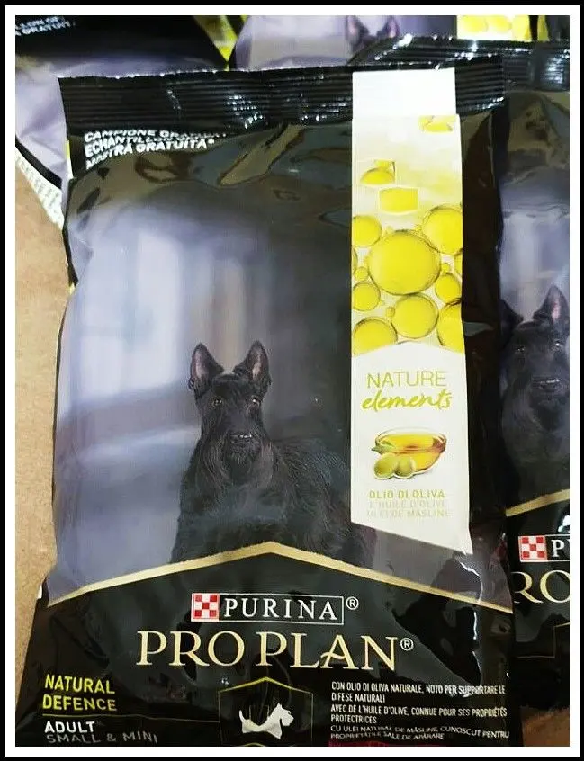
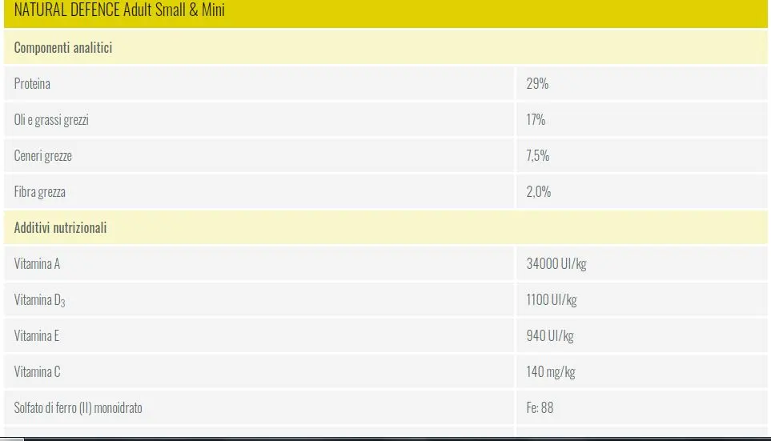
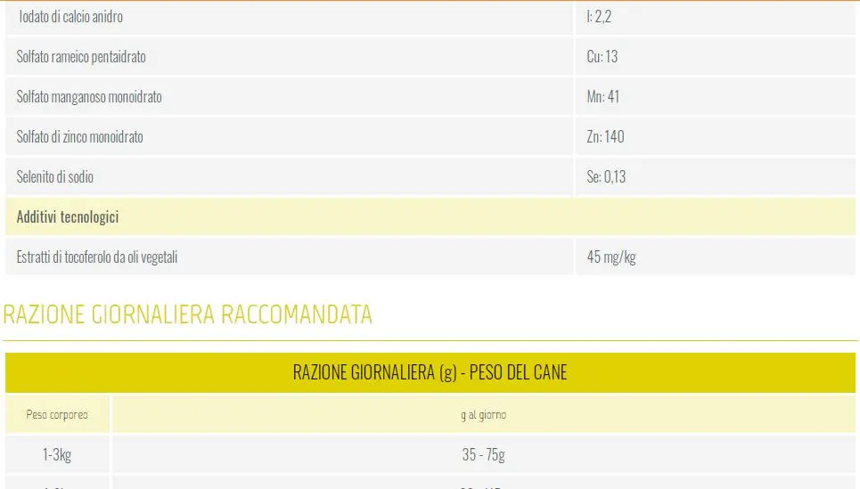
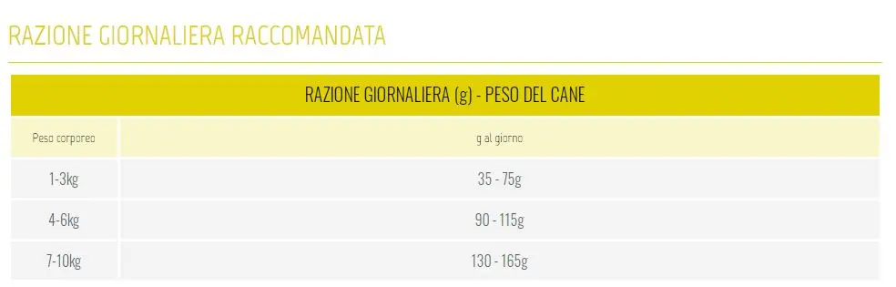

Campagna The Insiders - Purina Pro PLAN

Nelle selezioni di The Insiders, sono stata scelta come tester e passaparola dei nuovi croccantini di PURINA PRO PLAN.
Alcuni giorni fa, infatti, ho ricevuto il pacco con prodotti dedicati al mio cucciolo e i suoi amici a 4 zampe.
Infatti, dopo 80 anni di esperienza nel campo, ormai sa molte cose a riguardo e soprattutto sa come beneficiare l'alimentazione del nostro animale. Ha così, elaborato la linea Natural Elements, ricca di olii, alghe e verdure.

Quello che ho ricevuto, è stato un kit di croccantini e con gli assaggi per altri pet, (che ho già distruito), un sacco/zainetto con il marchio Purina Pro Plan ed in più buoni sconti di 2€ sull'acquisto.
Dopo aver fatto le dovute foto e distribuzioni, eccomi a parlarvi del prodotto.

Da premettere che dico sempre ciò che mi sento di dire e quindi, ne questa e nessun'altra campagna in passato, hanno richiesto un giudizio forzato. È tutto molto lecito e personale. Ci tenevo a dire questa cosa!modificato

Dunque, parliamo della linea Purina Pro PLAN Natural Elements, ha diversi gusti per i nostri pet.
Quelli ricevuti invece sono solo "Adult Natural Defence" – e quindi all'olio di oliva.
A cosa servono i croccantini Purina?
L'alimentazione all'olio di oliva è fondamentale perché grazie alle proteine di alta qualità che ne contengono, aiuta la muscolatura, l'articolazione e a mantenere il cuore sano del nostro cucciolo.
Inoltre, aiuta anche l'igiene orale che non è un fattore da sottovalutare.
Come dicevo prima esistono anche altri gusti di questa gamma e sono:

- Puppy Balanced Start – con spinaci naturali e olio di pesce.
- Adult Derma Care – con olio di semi di lino naturale.
- Adult Regular Digestion – con alga spirulina naturale.

Essendo all'olio di oliva, ha un sapore un po' più forte rispetto ai soliti croccantini che il mio cane mangia e quindi ho preferito aggiungere i suoi insieme a questo nuovo prodotto. In modo tale da abituarsi al sapore. Infatti, ora li mangia senza problemi e sono anche di suo gradimento.

Ovviamente per i benefici devo aspettare, sarei davvero molto precoce se dicessi che vedo diversità in lui o che comunque non fanno effetto. Ma già che sono sicura degli ingredienti che do da mangiare al mio pet, mi sento super sicura.
Vi lascio la scheda dei valori nutrizionali del prodotto.


